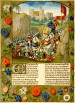

Enguerrand de Monstrelet, Chronique de France. Frans. Handschrift op perkament, 266 ff., 405 x 300 mm. Brugge(?), circa 1495. -- (VGG F 2)
De kroniek van Enguerrand de
Monstrelet doet vooral verslag van het wisselend krijgsverloop in de steeds weer
oplaaiende oorlogen tussen Frankrijk en Engeland in de jaren 1380-1429. Het was stof die
in hofkringen nog lang daarna gelezen werd.
De slag bij Azincourt in 1415 was een dramatisch hoogtepunt in de strijd. Het veel
kleinere Engelse leger onder Hendrik V versloeg er de Fransen die werden aangevoerd door
de connetable d’Albret, vooral door het tactisch inzetten van boogschutters tegen de
superieur geachte cavalerie.
De miniatuur van deze slag op folio 124v plaatst in afwijking van de eerder getoonde voorbeelden, geheel overeenkomstig de nieuwe opvattingen in de kunst de veldslag in een landschap, waarbij het perspectief gesteund wordt door de twee rotspartijen, een op de voorgrond, een in het middenveld. Het kasteel op de achtergrond, Azincourt, lijkt door een ijle atmosfeer omgeven.
Het werkelijkheidsgehalte is gering. Landschap en kasteel zijn verzonnen en dienen slechts als omkadering. De anonieme verluchter van de Leidse Monstrelet, waarschijnlijk dezelfde als de Meester van het Londense Rose-handschrift (British Library, Harley 4425), baseerde zijn voorstelling op een vluchtig lezen van de tekst. Een hoofdmoment vormt de ontmoeting van de twee legeraanvoerders. Ook de opstelling van de Engelse boogschutters is aan de kroniek ontleend. Maar er is binnen de beperkte ruimte van de miniatuur niet geprobeerd er een breed front van te maken. De omvang van de legers wordt gesuggereerd door twee lange kolonnes, in een sterk overdreven perspectief, waarbij de Franse kolonne aanzienlijk langer is. Zo werd de numerieke overmacht aangegeven. De glimlichten op de helmen versterken de indruk dat het om een grote legermacht gaat.
De randen van de miniaturen in het handschrift bestaan uit natuurgetrouw geschilderde bloemen, bladeren en vruchten tegen een olijfgroene achtergrond. De nuancering in de kleuren, het werken met schaduwen in de bloemen en hun schaduw op de ondergrond versterken het ruimtelijk effect. Dit type randwerk kwam tegen het einde van de vijftiende eeuw in de mode, eerst in de zogenaamde Gents-Brugse school, later ook elders. Ze bewijzen het streven om de natuur ook ruimtelijk zo exact mogelijk weer te geven.
Literatuur
- A.W. Byvanck, Les principaux manuscrits à peintures conservés dans les collections publiques du Royaume des Pays-Bas, Paris 1931 ( = Bulletin de la Société francaise de reproduction des manuscrits à peintures. 15), p. 93-95, pl. XXVIII-XXX.
- Christina, queen of Sweden. A personality of European civilisation. Stockholm 1966, nr. 1359.
- Mireille Madou, ‘De Leidse Kroniek van Enguerrand de Monstrelet', in: Archivum artis Lovaniense. Bijdragen tot de geschiedenis van de kunst der Nederlanden, opgedragen aan J.K. Steppe. Uitg. door M. Smeyers. Leuven 1981, p. 111-122.
| vorige pagina | top pagina |